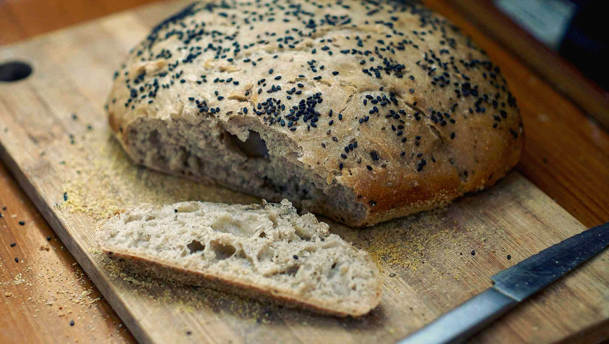

no knead bread
1 loaf — 60 minutes
No knead bread is the easiest kind of artisan-style bread you can make at home - it requires little effort and absolutely no kneading whatsoever.
This forgiving recipe allows for substitutions and additions of ingredients without altering the final texture of the bread. If you bake a whole wheat loaf, you might want to add 5 g of gluten flour to help it rise.
The bread can be left to rise overnight. I usually mix it at around 9pm, and bake it early the next morning at 8am. Unlike a lot of bread recipes, there is no second rise, and you don't need to knead or monitor it at all, because the gluten develops on its own. It's a recipe that is very hard to fail at, and you'll get good bread every time!
We sometimes add spices to the dough, like chili and garlic, or we make a more hearty bread by adding pumpkin seeds or sunflower seeds. Experiment with it!
Baking without a dutch oven
If you don't have a cast-iron container with a lid, you can use a baking pan with foil. This is the method I use, because I lack a good lid. While the bread doesn't have a hard top crust, the result is still great (the bottom will be tougher than the top). Coat the bread pan with 15 ml (1 tbsp) olive oil, and sprinkle the inside of the pan with some cornmeal (enough to cover it all in a thin coat). The cornmeal will keep the dough from sticking to the pan. Bread pans don't keep their temperature as well as cast-iron cookware, so the bread will stick due to lack of heat. Oiling the pan is necessary.
Sourdough version
To make sourdough no-knead bread, replace the commercial yeast with a little less than 170 g (3/4 cup) of healthy, well-fed sourdough starter. Give the dough an extra long rise and then transfer the proofed dough into a hot cast-iron pot with a lid.
 all purpose flour240 g
all purpose flour240 g spelt flour100 g
spelt flour100 g salt2.5 g
salt2.5 g water350 ml
water350 ml active dry yeast2.5 g
active dry yeast2.5 g
bread preparation
- In a large bowl, mix 240 g (2 cups) of all purpose flour, 100 g (1 cup) of spelt flour (whole wheat works too), 5 g (1 tsp) of salt, and 2.5 g (1/2 tsp) of active dry yeast. Mix well.
- Add 350 ml (1 1/2 cups) of water gradually, stirring it with a spoon into a cohesive dough. The dough will be wet - that's okay, there is no need to add extra flour.
- Put a bag or cloth over the bowl, and let the dough rest anywhere from 9 to 24 hours. Ideally, prepare the dough in the evening and let it rest overnight.
- Next morning:, turn the dough onto a lightly floured surface, and form it into a round loaf. Let dough rest for 1 h.
- Add your dutch oven on the lowest oven rack and then preheat your oven to 230 °C (450 °F). Pre-heat your container for 30 minutes. (To bake without a dutch oven, I have a mini-tutorial in the recipe description above.)
- Place the wet dough on a lightly floured surface. Shape the dough into a rough ball. If too wet to handle, put some flour on your hands.
- After 30 minutes has passed, carefully take out the dutch oven with oven mitts — careful, it's hot! Lay the dutch oven over a neutral surface (wooden board, kitchen towel etc). Place your bread into the dutch oven. At this point, you can add some seeds overtop of the bread. In this recipe, I used sesame seeds, but poppy seeds or quick oats would also be good. Cover with lid and place back inside oven.
- Bake for 30 minutes.
- After 30 minutes, take the lid off, and let it cook uncovered for another 7 minutes. Let cool completely before slicing.